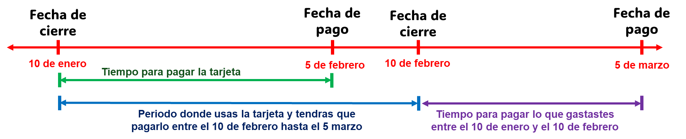

Domina las tarjetas, se un crack con ellas
Conceptos claves
Usar tarjetas de crédito no solo es "gastar y pagar", hay algunos conceptos claves que debes saber pero antes de eso, dejame aclarar algo:
Las tarjetas de débito solo son un metodo de pago, no es "mas dinero".
Muchas personas lo usan al maximo y cuando llega la hora de pagar, no tiene el dinero suficiente para hacerlo y aquí vienen los problemas y dolores de cabeza.
Ahora sí veamos los conceptos claves:
1. Fecha de corte: Es el dia en que el banco "cierra el sobre". Suma todo lo que gastastes en los ultimos 30 dias y genera tu estado de cuenta.
2. Fecha de pago: En realidad debería llamarse "fecha de último día de pago", generalmente dura 20 dias despues de la fecha de corte.
Es el periodo de tiempo que tienes para pagar sin que te cobren intereses.
3. Tasa de interes: Es el porcentaje que te cobra el banco por no pagar toda tu deuda dentro del periodo de la fecha de pago.
Normalmente es alto, en algunos bancos llegan al 99%.
Si eres una persona responsable (que paga a tiempo)
con las tarjetas, la tasa de interes no deberia importarte.
4. Membresía / Anualidad: Es el dinero que pagas cada año por tener la tarjeta. Aunque, normalmente las tarjetas no te cobran la membresía si llegas a cierta meta de consumo.
Despues hablaremos mas de esto ya que es importante.
5. Línea de crédito: El monto maximo que el banco te presta dinero.
6. Crédito disponible: Lo que te queda libre para gastar.
7. Disposición de efectivo: Es la función de retirar dinero.
Importante: A diferencia de una tarjeta de débito, evita a toda costa retirar dinero de la tarjeta de crédito
ya que el banco te cobra comisiones y tasas de interes altísimos.
Vamos a poner un ejemplo sobre la fecha de cierre y pago para que quede mas claro:
Nuestra fecha de cierre son los 10 de cada mes .
Nuestra fecha de pago (aunque deberia llamarse "última fecha para pagar") son los 5 de cada mes.
Tenemos aproximadamente 25 dias para pagar la tarjeta ya que tenemos desde el 10 de cada mes hasta el 5 del siguiente mes.

Analiza la imagen ya que es importante que entiendas esos conceptos. Al comienzo puede parecer confunso pero lo entenderas.
Nota: Yo te recomiendo que, un día despues de tu fecha de cierre, pagues toda la deuda del "mes anterior" para que no te olvides y no pagues el último día.
En este ejemplo, te recomiendo pagar toda tu deuda el 11 de cada mes.
Mencione que iba a explicarles mas sobre la membresía ya que es otro concepto muy importante.
Mucha gente se desaniman cuando quieren obtener una tarjeta de crédito y se dan cuenta que dice, por ejemplo: "membresía: 240 soles mensual".
Entonces... Voy a pagar 240 soles cada año, solo por tener la tarjeta?
No es así. La membresia normalmente funcion asi:
"La membresia de la tarjeta X es de 240 soles cada año pero se te exonera (ya no pagas) si consumes como minimo 200 soles cada mes o 2400 soles en total durante todo el año".
Ahora, ya sabes mejor sobre como funciona la membresia.
Aprende a comparar tarjetas
1. TCEA (Tasa de Costo Efectivo Anual): Este es el indicador real. Incluye la tasa de interés, las comisiones y los gastos (como el seguro de desgravamen).
Si planeas pagar siempre a fin de mes (pago directo), la TCEA no te deberia importar, pero si piensas pagar en cuotas, busca la TCEA más baja.
Aunque algunos bancos tienen promociones de "cuotas sin intereses" con algunas tiendas.
2. Membresía Anual: Varía desde S/0 hasta más de S/500 en tarjetas Black o Signature. Casi todos los bancos ofrecen exonerarla si consumes un monto mínimo mensual
(ej. S/1.00 al mes o S/100 acumulados). Pregunta siempre por la meta de exoneración. Imagina que consigues una tarjeta de "alto nivel" como la Signature
y tienes que consumir al menos 1000 soles cada mes si no quieres pagar la membresia de 400 soles (es solo un ejemplo) pero tu
solo gastas 800 soles como maximo cada mes. Al final del año tendras que pagar los 400 soles y todos los beneficios de la tarjeta (puntos, millas,
descuentos, etc) van a parecer inservibles.
Asegurate de mirar esa informacion, si solo puedes gastar 800 cada mes, entonces busca una tarjeta que te exija gastar menos dinero.
3. Beneficios: Imagina que sacas una tarjeta que te da millas (ej. 1 milla por cada 1.5 dolares o su equivalente a soles) pero
a ti no te gusta viajar. Ese beneficio no te va a servir (aunque muchos bancos tienen la opcion de canjear millas por dinero para pagar tus consumos).
Aqui te doy algunas recomendaciones para conseguir tarjetas de crédito dependiendo de cuales son tus gustos y necesidades:
| Perfil | Que buscar | Ejemplos |
|---|---|---|
| Eres viajero | Millas (Latam Pass, LifeMiles), acceso a Salas VIP (Priority Pass), seguros de viaje. | BCP Latam Pass, Visa Infinite (lo tienen el BCP, Scotiabank, Interbank), BBVA Visa Signature / Mastercard Black, Interbank American Express Platinum, etc. |
| Eres ahorrador | Cashback (devolución de dinero real por tus compras). | Interbank Cashback, RappiCard, BBVA Signature, IO BCP. |
| Eres comprador | Tarjetas sin membresía (sin condiciones). Aunque normalmente tienen pocos beneficios. | BCP Visa Light, BBVA Cero, etc. |
Las tarjetas tambien varian según la gama. Algunas son más fáciles de conseguir pero otras son solo para gente de clase alta, lo mejor
es eligir una que se ajuste a nuestro prespuesto. Aquí clasifique las tarjetas mas usadas actualmente desde las mas accesibles, hasta las mas exclusivas.
Las tarjetas mas exclusivas tienen mas beneficios y los bancos son mas exigentes (no se la dan a cualquier persona) pero hay tarjetas como la IO que tienen beneficios
muy buenos. Aqui te las dejo:
- Tarjeta IO BCP: Ofrece 1% de cashback ilimitado en todas tus compras y S/0 de membresía sin condiciones.
(probablemente de las mejores actualmente)
- Visa Light BCP: Sin condiciones de consumo minimo, no te da puntos pero sirve para principiantes (la consigues con el programa ANDO).
- Interbank Millas Benefit (Platinum): Exoneras la membresia si gastas al menos S/ 1 al mes. Además, ofrece benefinicios de bienvenida como
ofrece 2 meses gratis de Disney+ y Star+ (igualmente ve a la pagina y consulta ya que puede cambiar).
- BCP Latam Pass (Oro/Platinum): La mejor si vuelas con LATAM. El bono de bienvenida suele rondar las 3,000 - 8,000 millas si cumples la meta de consumo inicial.
- BBVA BFree : Acumulas puntos BBVA para canjearlos en millas, pagar tus consumos o comprar algo. Normalmente te dan 2000 puntos de bienvenida.
- Visa Infinite / Mastercard Black: Acceso ilimitado a salas VIP (LoungeKey) y la tasa de acumulación de Scotia Puntos es de las más altas del mercado.
- Amex The Platinum Card (Interbank): El prestigio y los seguros de viaje. Es la tarjeta con mejor servicio de Concierge y beneficios en hoteles de lujo.
- BCP Latam Pass (Signature/Infinite): Millas directas, acceso ilimitado a salones VIP (Salo VIP y LoungeKey) y cuotas sin intereses en LATAM.
- Interbank Benefit (The Platinum Card Amex): Flexibilidad total: canjeas millas por viajes o "borras" compras.
Acceso a salones VIP y excelente bono de bienvenida.
- BBVA Visa Signature: Excelente para quienes concentran sus gastos. Sus puntos BBVA tienen un valor de canje muy competitivo para "borrar"
compras de comida o moda.
- BCP Visa Infinite Iridium: Es el tope de gama para acumular millas LATAM Pass, con bonos de bienvenida de hasta 25,000 millas.
Hay tarjetas de credito que son especificas para ciertos comercios. Son una buena opcion si compras mucho en esas tiendas:
- Tarjeta CMR Falabella: Descuentos agresivos en Tottus, Sodimac y Falabella.
- Tarjeta Oh!: Descuentos en muchos productos de PlazaVea, Oechsle, Promart, Makro, Inkafarma y Mifarma.
- Tarjeta Cencosud: Acumulas puntos Bonus y tienes descuentos exclusivos en Wong y Metro.
- Tarjeta Ripley: Ganas Ripley Puntos Go. Lo mejor de esta tarjeta son sus campañas de "Cierra Puertas" y los "Ahora o Nunca".
NOTA: Esta información es de inicios del año 2026, si estas leyendo esto unos meses o años después, pudo haber cambiado.
Usala como un crack
Las tarjetas de crédito son mejores que las tarjetas de débito si eres responsable ya que te da puntos, millas, descuentos exclusivos, etc.
Ademas mejoran tu historial crediticio para luego poder acceder a un credito hipotecario o vehicular.
Piensalo bien: Qué te da de regreso las tarjetas de débito? NADA.
Aunque si eres irresponsable u olvidadizo a la hora de pagar la tarjeta, entonces sera mejor que te quedas con la tarjeta de débito.
Para manejar tarjetas de crédito no necesitas ser un experto en economía, pero si hay mas cosas que tienes que saber a diferencia de usar tarjeta de débito:
1. Pago directo (1 cuota): Si compras algo y seleccionas "una sola cuota" (o pago directo), el banco no te cobrara intereses.
Hay bancos como BBVA que tienen ofertas de "cuotas sin intereses", con algunas tiendas como iShop, samsung, mercadolibre, hiraoka, efectivo.
2. Evita la membresía: Casi todos los bancos peruanos (BCP, BBVA, Interbank, Scotiabank)
cobran una comisión anual por "membresía", que puede ir desde S/ 60 hasta más de S/ 500. Te cobran esa membresia solo por tener la tarjeta.
Lo bueno es que la mayoría de bancos te exoneran (ya no pagas) si consumes al menos un sol (S/ 1) todos los meses del año.
Algunos bancos son mas exigentes y ten piden consumir mas dinero cada mes para que no pagues la membresía.
Antes de solicitar una tarjeta, revisa cuanto es la membresía y que te exige el banco para exonerarla.
Dato: Por ley de la SBS, todos los bancos están obligados a ofrecer al menos una tarjeta sin membresía
(ej. la tarjeta "Cero" de varios bancos).
3. Seguro de Desgravamen: Este es un seguro obligatorio en Perú que cancela tu deuda en caso de fallecimiento o invalidez.
Se cobra mensualmente si tienes saldo deudor al cierre de tu ciclo. Normalmente es un monto muy bajo (1 sol o hasta 20 soles dependiendo de cuanto sea tu deuda).
Si pagas el total de tu deuda antes de tu fecha de cierre, tu de deuda será S/ 0 y no se te cobrará el seguro ese mes.
4. Cero Retiros de Efectivo: Nunca, bajo ninguna circunstancia, retires efectivo de un cajero con tu tarjeta de crédito.
Las tasas de interés para disposición de efectivo en Perú pueden superar el 100% anual, además de comisiones fijas por el retiro.
Si necesitas efectivo, es mucho mejor pedir un préstamo en yape o cualquier otra entidad.
5. Antiguedad de la tarjeta: La antiguedad de tus tarjetas de crédito son muy importante. Si "te das de baja" de una tarjeta (tal vez porque ya no la usas
y conseguistes una mejor de otro banco) no canceles tu tarjeta antigua. Llama al banco y pide que te cambien a una tarjeta sin membresia (todos los bancos tienen una)
y de esa manera ya no te preocupas por tener que usar esa tarjeta, la guardas y la dejas ahí.
Si cancelas tu tarjeta mas antigua (la primera que obtenistes) todo tu historial con esa tarjeta se va al tacho.
Estas son las "reglas" que todos debemos conocer pero tambien hay otros tips mas avanzados para acelerar tu score crediticio :
6. No pagues toda tu deuda: El banco siempre se fija cuanto dinero gastastes pero la SBS y Equifax solo se fijan en la deuda que tienes despues de la fecha de cierre.
Si has usado tu tarjeta pero pagas toda la deuda antes de tu fecha de cierre. Cuando llegue tu fecha de cierre vas a tener "deuda: 0", es algo bueno
pero la SBS y Equifax te veran como alguien que tiene tarjeta pero no la usa. Tu score subira pero mas lento. Siempre trata de dejar al menos 10 soles de deuda
(tampoco dejes mucho dinero deuda ya que el seguro de desgravamen sera mas alto) y despues de la fecha de cierre termina de pagar el resto.
7. La regla del 30%: Esta regla nos dice que: Cuando llegue la fecha de cierre y nos llegue nuestra factura
no debemos consumir mas del 30% del total de nuestra línea ya que nos hace ver como que estamos desesperados por el credito y lo usamos mucho.
Ejemplo:
Estamos febrero, tu fecha de cierre son los 10 de cada mes y tienes una linea de 1000 soles:
En todo enero puedes usar hasta el 100% de tu linea pero antes del 10 de febrero (ej. el 9 de cada mes) paga tu tarjeta y baja la deuda a menos del 30%.
Es decir, tu deuda debe ser menos de 300 soles antes que llegue el 10 de enero. Despues del 10 ya puedes pagar el resto de tu deuda.
Recuerda que LAS TARJETAS DE CRÉDITO NO SON DINERO EXTRA, SON SOLO UN MÉTODO DE PAGO DIFERENTE. A final del mes tendras que pagar tus deudas
asi que solo usalo cuando sabes que podrás pagarlo a final de mes.
Te doy un consejo de causa: Yo veia mi cuenta bancario o yape y decía: "Tengo 100 soles en yape, eso significa que solo puedo gastar 100 soles como maximo
con mi tarjeta de crédito. Tal vez al final del mes recibire mi sueldo y tendré más dinero pero prefiero no arriesgarme".